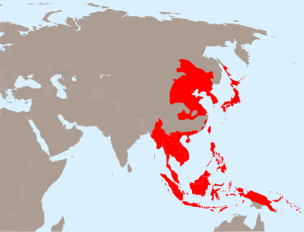

ការត្រួតត្រារបស់ជប៉ុននៅកម្ពុជា(១៩៤១–១៩៤៥)
កម្ពុជាកាន់កាប់ដោយជប៉ុន
ទង់ជាតិប្រើនៅឆ្នាំ ១៩៤៥
ចក្រភពជប៉ុនឡើងដល់កំពូលនៅឆ្នាំ ១៩៤២។ ស្ថានភាព ការកាន់កាប់ដោយយោធាចក្រភពជប៉ុន |ការកាន់កាប់ដោយយោធាចក្រភពជប៉ុន |Military occupation ធានី ភ្នំពេញ រដ្ឋាភិបាល រដ្ឋអាយ៉ង ព្រះមហាក្សត្រ ▪ ២៥ មេសា ១៩៤១ នរោត្តម-សីហនុ សម័យកាលប្រវត្តិសាស្រ្ត សង្គ្រាមលោកលើកទី២ ▪ Established ១៩៤១ ▪ ជប៉ុនលុកលុយកម្ពុជាដែលកាន់កាប់ដោយបារាំង សីហា ១៩៤១ ▪ ពលប្រហារ កុម្ភៈ ១៩៤៥ ▪ ការចុះចាញ់របស់ជប៉ុន ១៥ សីហា ១៩៤៥ ▪ ការបង្កើតឡើងវិញនៃអាជ្ញាធរបារាំង តុលា ១៩៤៥ ▪ Disestablished ១៩៤៥ រូបិយវត្ថុ រៀល

ការត្រួតត្រារបស់ជប៉ុននៅកម្ពុជា គឺជាសម័យកាលនៃប្រវត្តិសាស្ត្រកម្ពុជាកំឡុងសង្គ្រាមលោកលើកទី២នៅពេលនោះចក្រពត្តិជប៉ុនបានបង្កើតរដ្ឋអំណាចរបស់ខ្លួនមកលើប្រទេសកម្ពុជា។ការត្រួតត្រារបស់ជប៉ុននៅកម្ពុជាបានផ្ដើមនៅចន្លោះឆ្នាំ ១៩៤១ និង ១៩៤៥ ហើយជាទូទៅប្រជាជនខ្មែរបានរត់គេចចេញពីអំពើព្រៃផ្សៃដែលបានធ្វើទារុណលើប្រជាពលរដ្ឋដូចដែលពួកអ្នកកាន់កាប់ជាតិជប៉ុនធ្លាប់ធ្វើនៅប្រទេសផ្សេងៗនៅអាស៊ីអាគ្នេយ៍ដូចគ្នា។ ទោះបីជាពេលដំបូងអនុញ្ញាតអោយរដ្ឋាភិបាលអាណានិគមឥណ្ឌូចិនបារាំងវិចឈីនៅមានភារកិច្ចខ្លះ យ៉ាងណាក្ដី ក៏នៅឆ្នាំ ១៩៤៥ រដ្ឋអំណាចជប៉ុននៅកម្ពុជា បានបង្កើតរដ្ឋអាយ៉ងនិយមតូក្យូនៅទីបំផុតដដែលជាដដែល។[១]
សាវតារប្រវត្តិសាស្ត្រ
សង្គ្រាមបារាំង-សៀមឆ្នាំ ១៩៤០-១៩៤១ បានបន្សល់ទុកនូវរដ្ឋអំណាចអាណានិគមសហភាពឥណ្ឌូចិននៅក្នុងទីតាំងមួយប្រកបដោយភាពទន់ខ្សោយ។ រដ្ឋាភិបាលវិចឈីបានចុះហត្ថលេខាលើកិច្ចព្រមព្រៀងមួយជាមួយជប៉ុនដើម្បអនុញ្ញាតអោយយោធាជប៉ុនឆ្លងកាត់តាមសហភាពឥណ្ឌូចិន និងដាក់ពង្រាយកងទ័ពជាច្រើននៅវៀតណាមខាងជើង រហូតដល់កំណត់នៃទ័ព ២៥ ០០០ នាក់។[២] ក្នុងគ្រានោះដែរ រដ្ឋាភិបាលថៃ បានពង្រឹងខ្លួនអាស្រ័យតាមសន្ធិសញ្ញាមិត្តភាពរបស់ខ្លួនជាមួយជប៉ុន ដោយឆ្លៀតឱកាសបានលើមុខនាទីរបស់ខ្លួន ថៃក៏បានលុកលុយខែត្រភាគខាងលិចរបស់កម្ពុជា។ បន្តបន្ទាប់ពីការលុកលុយនេះ តូក្យូបានទទួលស្វាគមន៍ហត្ថលេខាលើសន្ធិសញ្ញាមួយនៅខែ មីនា ឆ្នាំ ១៩៤១ ដែលបានបង្ខំអោយពួកបារាំងបោះបង់ ខេត្តបាត់ដំបង សៀមរាប ដូចគ្នានេះដែរ ក៏បានបង្រួញដីរវាងខ្សែស្របទី១៥ និងភ្នំដងរែក[៣] នៅឯខេត្តស្ទឹងត្រែងផងដែរ។ បន្ទាប់ពីរដ្ឋថៃក្រោមមគ្គុទេសនិយមជប៉ុននៃលោកសេនាប្រមុខ (ចមពល) ប្លែកវិបុលសង្គ្រាម បានកាន់កាប់ទឹកដីទាំងនោះ កម្ពុជាក៏បានបាត់បង់ប្រជាពលរដ្ឋស្ទើរតែកន្លះលាននាក់ និងមួយភាគបីនៃអតីតផ្ទៃដីរបស់ប្រទេសខ្លួន។[៤]
ការត្រួតត្រារបស់ជប៉ុន
នៅខែ សីហា ឆ្នាំ ១៩៤១ កងទ័ពជប៉ុនបានចូលមករដ្ឋដែនអាណាព្យាបាលបារាំងនៅកម្ពុជា ហើយបានបង្កើតយោធភូមិដែលមានចំនួនកងទ័ព ៨ ០០០ នាក់។ ទោះបីជាមានវត្តមានកងទ័ពរបស់ខ្លួនក៏ដោយ ក៏រដ្ឋអំណាចជប៉ុនបានអនុញ្ញាតអោយពួកមន្ត្រីអាណានិគមបារាំងវិចឈីបន្សល់ទុកទីតាំងរដ្ឋបាលរបស់ខ្លួនអោយនៅមានដដែល។ នៅថ្ងៃទី ២០ កក្កដា ឆ្នាំ ១៩៤២ មានបាតុកម្មប្រឆាំងបារាំងដ៏ធំមួយនៅភ្នំពេញ បន្ទាប់ពីព្រះសង្ឃលេចធ្លោមួយអង្គ ព្រះអាចារ្យហែម-ចៀវត្រូវបានចាប់ខ្លួនដោយសារការធ្វើធម្មទេសនាបំបះបំបោរប្រឆាំងនឹងពួកកងជីវពលអាណានិគមដោយត្រង់ៗ។ រដ្ឋអំណាចបារាំងបានចាប់ខ្លួនមេបាតុកម្ម លោកប៉ាច-ឈឿន និងបាននិរទេសលោកទៅកាន់កោះកុងសឺន (កោះត្រឡាច) កោះឃុំឃាំងមនុស្សរបស់បារាំង។[១] លោកប៉ាច-ឈឿនគឺជាបញ្ញវន្តខ្មែរគួរអោយគោរពម្នាក់ លោកបានចូលរួមជាមួយវិទ្យាស្ថានពុទ្ធសាសនបណ្ឌិត្យ (Institut Bouddhique) និងជាស្ថាបនិកនៃសារព័ត៌មាន នគរវត្ត កាសែតនយោបាយបើកចំហដំបូងគេជាភាសាខ្មែរនៅឆ្នាំ ១៩៣៦ រួមជាមួយលោកស៊ីម-វ៉ា។[៥] អ្នកផ្សេងម្នាក់ទៀតក្នុងចំណោមអ្នកទាំងនោះដែលនៅពីក្រោយ នគរវត្ត គឺលោកសឺន-ង៉ុកថាញ់ (ជាតុលាការីដែលបានរៀនសូត្រនៅប៉ារីស) ត្រូវបានគេចោទប្រកាន់ចំពោះហេតុការណ៍បាតុកម្ម ក្នុងនោះរដ្ឋអំណាចបារាំងបានសង្ស័យដែលលោកត្រូវបានរួចខ្លួនដោយសារការជួយរបស់ជប៉ុន។
រដ្ឋអាយ៉ងនិយមតូក្យូ
នៅឆ្នាំ ១៩៤៥ ជប៉ុនបានធ្វើ ពលប្រហារ ដែលបានធ្វើអោយការគ្រប់គ្រងរបស់បារាំងលែងមានលើឥណ្ឌូចិនជាបណ្ដោះអាសន្ន។ ឥណ្ឌូចិនទាំងស្រុងបានប្រែក្លាយជារបស់ជប៉ុនដោយសារការផ្ដួលរំលំរដ្ឋបាលអាណានិគមបារាំង និងការដកហូតអាវុធពីកងទ័ពបារាំង។ បំណងរបស់ពួកគេគឺជួយជ្រោងទង់ប្រជាជនក្នុងស្រុកឡើងវិញដែលជាកិច្ចប្រឹងប្រែងនៃសង្គ្រាមរបស់តូក្យូដោយការជំរុញឱ្យមេដឹកនាំក្នុងស្រុកប្រកាសឯករាជ្យ។ នៅថ្ងៃ ៩ មីនា ឆ្នាំ ១៩៤៥ ព្រះមហាក្សត្រវ័យក្មេង ព្រះបាទនរោត្តម-សីហនុ បានប្រកាសព្រះរាជាណាចក្រកម្ពុជាឯករាជ្យ បន្តបន្ទាប់ពីសំនើជាផ្លូវការដោយពួកជប៉ុន។ ក្នុងរយៈពេលដ៏ខ្លី បន្ទាប់មកទៀតរដ្ឋាភិបាលជប៉ុនបានអនុម័តឱ្យឯករាជ្យកម្ពុជាមានត្រឹមតែឈ្មោះប៉ុណ្ណោះ ហើយក៏បានបង្កើតស្ថានកុងស៊ុលនៅភ្នំពេញ។[៦] ថ្ងៃ ១៣ មីនា ព្រះបាទសីហនុបានផ្លាស់ប្ដូរឈ្មោះផ្លូវការនៃប្រទេសជាភាសាបារាំងពី Cambodge ទៅ កម្ពុជា ។ រដ្ឋាភិបាលថ្មីបានលុបបំបាត់ចោលឡាតាំងយានកម្មនៃភាសាខ្មែរដែលរដ្ឋបាលអាណានិគមបារាំងបានកំពុងចាប់ផ្ដើមបង្ខំ ហើយបានជំនួសមកវិញដោយអក្សរខ្មែរជាផ្លូវការ។ វិធានការនេះបាននាំយកមកដោយរដ្ឋអំណាចរដ្ឋាភិបាលដែលមានជីវិតខ្លីប្រហែលជាមានប្រជាប្រិយភាព និងបន្តតៗមកទៀត ចាប់ពីពេលនោះមកគ្មានរដ្ឋាភិបាលមួយណានៅកម្ពុជាព្យាយាមធ្វើឡាតាំងយានកម្មភាសាខ្មែរម្ដងទៀតទេ។[៧] លោកសឺន-ង៉ុកថាញ់បានវិលត្រឡប់មកកម្ពុជាវិញ។ លោកដំបូងឡើយត្រូវបានតែងតាំងជារដ្ឋមន្ត្រីការបរទេស ហើយនឹងបានក្លាយជានាយករដ្ឋមន្ត្រី ពីរខែបន្ទាប់មកទៀត។[៨] រដ្ឋអាយ៉ងកម្ពុជាជប៉ុនបានបន្តពីខែ មីនា ដល់ តុលា ឆ្នាំ ១៩៤៥។ ការកាន់កាប់របស់ជប៉ុននៅកម្ពុជាបានបញ្ចប់ជាមួយនិងការចុះចាញ់ជាផ្លូវការរបស់ជប៉ុននៅខែ សីហា ឆ្នាំ ១៩៤៥។ បន្ទាប់ពីក្រុមកងទ័ពសម្ព័ន្ធមិត្តបានចូលមកកាន់កម្ពុជា កម្លាំងទ័ពរបស់ជប៉ុនដែលមានវត្តមាននៅក្នុងប្រទេសនេះត្រូវបានគេដកហូតអាវុធ និងធ្វើបិតុភូមិនិវត្តន៍។ ពួកបារាំងអាចដាក់រដ្ឋបាលអាណានិគមនៅភ្នំពេញឡើងវិញនៅខែ តុលា ឆ្នាំដដែល។ បន្ទាប់ពីការចាប់លោកសឺន-ង៉ុកថាញ់ដោយសារការចូលដៃចូលជើងគ្នាជាមួយពួកជប៉ុន រដ្ឋអំណាចអាណានិគមបារាំងបាននិរទេសលោកទៅកាន់បារាំង ដែលជាកន្លែងដែលលោករស់នៅដោយការឃុំខ្លួនក្នុងផ្ទះ។ ពួកអ្នកគាំទ្រលោកខ្លះបានលួចលាក់ខ្លួន និងបានរត់គេចខ្លួនទៅកាន់កម្ពុជាភាគពាយព្យដែលគ្រប់គ្រងដោយថៃ ដែលពួកគេជាចុងក្រោយបានចូលរួមកម្លាំងនៅក្នុងក្រុមទាមទារឯករាជ្យដំបូងគេមួយ គឺខ្មែរឥស្សរៈ។ ចលនាជាតិនិយមដែលមាននិន្នាការនយោបាយផ្សេងៗប្រឆាំងនឹងបារាំងត្រូវបានរៀបចំឡើងដោយការគាំទ្ររបស់ថៃ ក៏ប៉ុន្តែក្រោយមកទៀតក៏បានបែកបាក់គ្នាជាបក្សជាពួកជាច្រើនដោយអន្លើៗ។[៩]